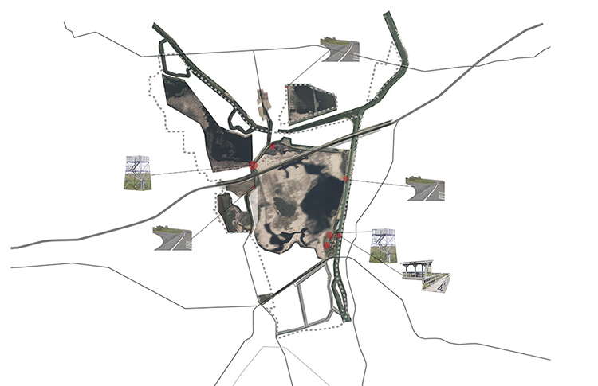
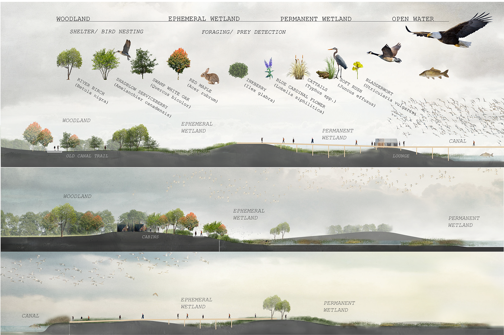
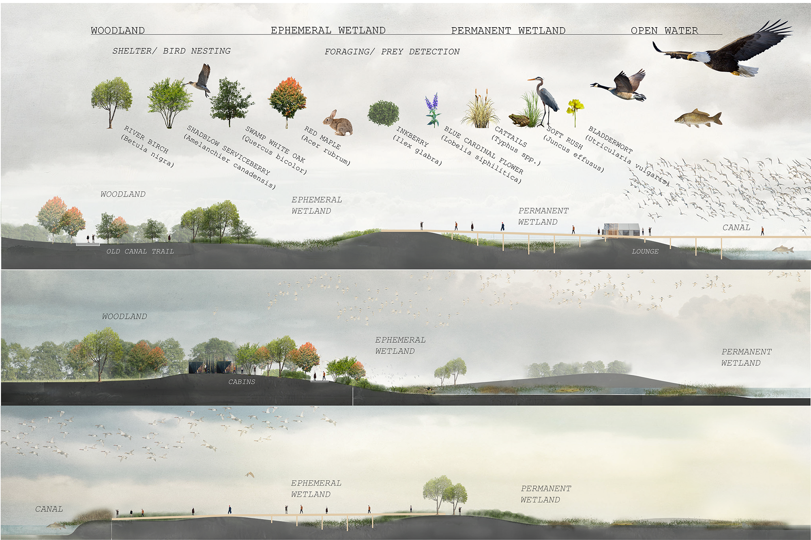

MONTEZUMA, NY
Fall 2018
Studio: Integrating Theory and Practice I
One of the most significant mobility systems in US history, Erie Canal made great contribution to human mobility and economic progress nationally in 19th century. However, today the canal is fragmented and often neglected. The project focuses on Montezuma Wildlife Refuge, where various water bodies converge, and human activities and nature meet. An island prototype is introduced to the junction of canals, to create floodplain channel and various types of wetlands. Various programs, including a campsite, a floating pier in the center of the conjunction, and a recreational corridor etc. are introduced to the site to hopefully transform the site to a regional ecological recreational park for towns along Erie Canal.
Based on previous analysis, the design deals with this interesting convergence of water and land forms. Numerous islands are introduced to this junction, to create floodplain channel and various types of wetlands. The old Erie Canal trace is transformed to a trail that connects the site with the village of Montezuma and lock 25. Various programs, including a campsite, a floating pier in the center of the conjunction, and a recreational corridor etc. are introduced to the site to hopefully transform the site to a regional ecological recreational park.
- Wetlands, 1900s -
- Wetlands, present -
- Landscape context -
- Perception mapping -
 
